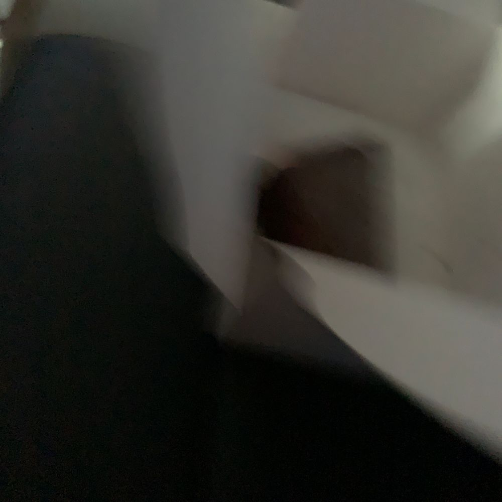

아이니 뭐야
나 빨리 먹고 싶은거 꾹 참고 찍고 먹었는데..
분명 찍을 땐 예쁘게 찍었다고 생각했는데
왜 이러지..? 흔들려서 속상🤔

민주 시점 케이크
저어번 부터 먹고 싶던 케이크가 있었는데
어제 갑자기 같이 먹자고 혜원 언니가 케이크를 사온 거 아니겠어유..? 갬동쑤
그래서 지금 출근하자마자 먹고 있어용
ㅠㅠㅠㅠㅠ너무 맛있어ㅠㅠㅠㅠㅠ
처음에 상자 딱 열었는데 쓰러져 있었어요ㅋㅋ
난 생각 없이 빨리 세워야 겠다! 했는데
언니는 쓰러진 케이크의 모습에 속상해했다는
예쁜 케이크 주고 싶었나 봐요..!
귀엽
암튼 둘이 너무 맛있게 먹었어용ㅎㅎ
요즘 내 최애 케이크🎂❣️
이호도 이제 점심 먹고 디저트 먹을 시간이네?!
오늘은 달달한 초코케이크 어때요?